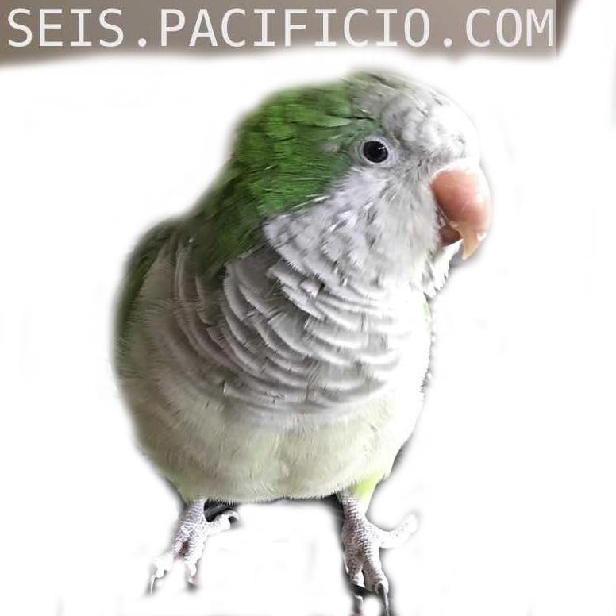

<html lang="en">

<head>
  <meta charset="utf-8" />
  <title>SEIS: a JSON object creator, viewer, updater and destroyer</title>
  <meta name="viewport" content="width=device-width, initial-scale=1">
</head>

<body>
  <script type="module">
    import { html } from 'https://unpkg.com/lighterhtml@1.2.1/esm/index.js?module';
    import { component } from 'https://unpkg.com/haunted@4.6.1/haunted.js';

    function Blue() {
      return html`
      <div id="aboutSeisContainer">
        <section id="propsInfo" class="wrapper">
          <h3>6️⃣</h3>
          <h3>seis <a href="https://github.com/pacificpelican/seis" id="github">💾</a></h3>
          <h4>
            an object cycle manager by 
            <a href="https://danmckeown.info">Dan McKeown</a>
          </h4>
          <aside id="json">
            SEIS is a <i>JSON object creator, viewer, updater and destroyer</i><br />
            It includes an API powered by <a href="https://expressjs.com/">ExpressJS</a> that persists the data to a JSON file (via <a href="http://techfort.github.io/LokiJS/">LokiJS</a>) and a web UI which uses <a href="https://nextjs.org/">NextJS</a> for interacting with the API.
          </aside>
          <aside>
            See the <a href="https://github.com/pacificpelican/seis/blob/master/README.md">readme</a> for how to start the app on your computer.
          </aside>
          <div id="github">
            <aside id="github">
              <div class="icon-preview">
                <a href="https://github.com/pacificpelican/seis">
                  <svg width="256" height="256" class="octicon octicon-logo-github" viewBox="0 0 45 16" version="1.1"
                    aria-hidden="true">
                    <path fill-rule="evenodd"
                      d="M18.53 12.03h-.02c.009 0 .015.01.024.011h.006l-.01-.01zm.004.011c-.093.001-.327.05-.574.05-.78 0-1.05-.36-1.05-.83V8.13h1.59c.09 0 .16-.08.16-.19v-1.7c0-.09-.08-.17-.16-.17h-1.59V3.96c0-.08-.05-.13-.14-.13h-2.16c-.09 0-.14.05-.14.13v2.17s-1.09.27-1.16.28c-.08.02-.13.09-.13.17v1.36c0 .11.08.19.17.19h1.11v3.28c0 2.44 1.7 2.69 2.86 2.69.53 0 1.17-.17 1.27-.22.06-.02.09-.09.09-.16v-1.5a.177.177 0 0 0-.146-.18zM42.23 9.84c0-1.81-.73-2.05-1.5-1.97-.6.04-1.08.34-1.08.34v3.52s.49.34 1.22.36c1.03.03 1.36-.34 1.36-2.25zm2.43-.16c0 3.43-1.11 4.41-3.05 4.41-1.64 0-2.52-.83-2.52-.83s-.04.46-.09.52c-.03.06-.08.08-.14.08h-1.48c-.1 0-.19-.08-.19-.17l.02-11.11c0-.09.08-.17.17-.17h2.13c.09 0 .17.08.17.17v3.77s.82-.53 2.02-.53l-.01-.02c1.2 0 2.97.45 2.97 3.88zm-8.72-3.61h-2.1c-.11 0-.17.08-.17.19v5.44s-.55.39-1.3.39-.97-.34-.97-1.09V6.25c0-.09-.08-.17-.17-.17h-2.14c-.09 0-.17.08-.17.17v5.11c0 2.2 1.23 2.75 2.92 2.75 1.39 0 2.52-.77 2.52-.77s.05.39.08.45c.02.05.09.09.16.09h1.34c.11 0 .17-.08.17-.17l.02-7.47c0-.09-.08-.17-.19-.17zm-23.7-.01h-2.13c-.09 0-.17.09-.17.2v7.34c0 .2.13.27.3.27h1.92c.2 0 .25-.09.25-.27V6.23c0-.09-.08-.17-.17-.17zm-1.05-3.38c-.77 0-1.38.61-1.38 1.38 0 .77.61 1.38 1.38 1.38.75 0 1.36-.61 1.36-1.38 0-.77-.61-1.38-1.36-1.38zm16.49-.25h-2.11c-.09 0-.17.08-.17.17v4.09h-3.31V2.6c0-.09-.08-.17-.17-.17h-2.13c-.09 0-.17.08-.17.17v11.11c0 .09.09.17.17.17h2.13c.09 0 .17-.08.17-.17V8.96h3.31l-.02 4.75c0 .09.08.17.17.17h2.13c.09 0 .17-.08.17-.17V2.6c0-.09-.08-.17-.17-.17zM8.81 7.35v5.74c0 .04-.01.11-.06.13 0 0-1.25.89-3.31.89-2.49 0-5.44-.78-5.44-5.92S2.58 1.99 5.1 2c2.18 0 3.06.49 3.2.58.04.05.06.09.06.14L7.94 4.5c0 .09-.09.2-.2.17-.36-.11-.9-.33-2.17-.33-1.47 0-3.05.42-3.05 3.73s1.5 3.7 2.58 3.7c.92 0 1.25-.11 1.25-.11v-2.3H4.88c-.11 0-.19-.08-.19-.17V7.35c0-.09.08-.17.19-.17h3.74c.11 0 .19.08.19.17z" />
                    </svg>
                </a>
              </div>
              <article id="pacificIOlogo">
                <a href="https://pacificio.com">
                  pacificio.com 
                </a>
              </article>
            </aside>
          </div>
          <li>
            You can view objects by entering them into the input at 
            <a href="https://github.com/pacificpelican/seis/blob/master/pages/Objectbrowser.js">Objectbrowser</a>
          </li>
          <li>
            After visualizing the object with the <code>enter your JSON</code> button you
            can persist the data by pressing the <code>save to DB</code> button
          </li>
          <li>
            Database is saved by default to the 
            <a href="#">/db/seisdb.json</a> file in the file system
          </li>
          <li>
            The saved objects can be viewed at <a href="https://github.com/pacificpelican/seis/blob/master/pages/Desk.js">Desk</a> 
            (search for seis as the database object name) in chronological
            order
          </li>
          <li>
            Edit, View and Delete are given the URL parameters they require to work via
            clicks on the links in Desk output
          </li>
          <li>Clicking on the red X in Desk output will take you to the Delete page where you can confirm deletion (of that entire object)</li>
          <li>
            When an object is created, along with the normal metadata, a
            special locator property is added. This is used as a kind of ID
            for editing and deleting
          </li>
        </section>

        <article id="appTree" class="wrapper2">
          <h3>App Component Tree</h3>
          <ul>
            <li>
              <a href="https://github.com/pacificpelican/seis/blob/master/pages/Objectbrowser.js">Objectbrowser</a> → <a href="https://github.com/pacificpelican/seis/blob/master/pages/SpreadsheetObjectbrowser.js">SpreadsheetObjectbrowser</a> → <a href="https://github.com/pacificpelican/seis/blob/master/pages/SpreadsheetCoreRecursive.js">SpreadsheetCoreRecursive</a>
            </li>
            <li>
              <a href="https://github.com/pacificpelican/seis/blob/master/pages/Desk.js">Desk</a> → <a href="https://github.com/pacificpelican/seis/blob/master/pages/Spreadsheet.js">Spreadsheet</a> → <a href="https://github.com/pacificpelican/seis/blob/master/pages/SpreadsheetCoreRecursiveClick.js">SpreadsheetCoreRecursiveClick</a>
            </li>
            <li>
              <a href="https://github.com/pacificpelican/seis/blob/master/pages/View.js">View</a> → <a href="https://github.com/pacificpelican/seis/blob/master/pages/SpreadsheetCoreRecursive.js">SpreadsheetCoreRecursive</a>
            </li>
          </ul>
          <h3 id="api">v1 API</h3>
          <ul id="routes">
            <li>
              GET database object collection: 
              <code>/api/1/getdbdata/db/seisdb/object/seis</code>
              <span className="info">
                <a href="https://github.com/pacificpelican/seis/blob/master/pages/Desk.js">Desk</a>, <a href="https://github.com/pacificpelican/seis/blob/master/pages/Spiralviewer.js">Spiralviewer</a>
              </span>
            </li>
            <li>
              GET one database object by locator:
              <code>/api/1/getdbdata/db/seisdb/object/seis/tuple/14206</code>
              <span className="info">
                <a href="https://github.com/pacificpelican/seis/blob/master/pages/View.js">View</a>
              </span>
            </li>
            <li>
              POST create new database object: 
              <code>
                /api/1/saveobjectdata/db/seisdb/obj/seis/newdata/%22%20%7B%20%5C%22name%5C%22%3A%20%5C%22Bogey%5C%22%20%7D%22
              </code>
              <span className="info">
                <a href="https://github.com/pacificpelican/seis/blob/master/pages/Objectbrowser.js">Objectbrowser</a>
              </span>
            </li>
            <li>
              POST (shallow) create new database object: 
              <code>/api/1/saveobjectdatashallow/db/spiraldb/obj/notes/newdata/%7B%22note%22%3A%22I%20love%20the%20cat!%22%2C%22savedAt%22%3A1554680275455%7D</code>
              <span className="info">
                <a href="https://github.com/pacificpelican/seis/blob/master/pages/Spiral.js">Spiral</a>
              </span>
            </li>
            <li>
              POST update existing database object by locator property: 
              <code>
                /api/1/updatedata/db/seisdb/object/seis/objprop/Bogey/objkey/name/newval/Belle/tuple/99372
              </code>
              <span className="info">
                <a href="https://github.com/pacificpelican/seis/blob/master/pages/Edit.js">Edit</a>
              </span>
            </li>
            <li>
              POST delete existing database object by locator property: 
              <code>/api/1/deletedata/db/seisdb/object/seis/tuple/15540</code>
              <span className="info">
                <a href="https://github.com/pacificpelican/seis/blob/master/pages/Delete.js">Delete</a>
              </span>
            </li>
          </ul>
        </article>
      </div>
      <main id="footerContainer" class="wrapper2">
        <aside id="artwork">
        
      </aside>
      <footer>
        SEIS is a product of <a href="https://pacificio.com">pacificio</a> copyright 2019<br />
        <a href="https://github.com/pacificpelican/seis" id="github2">The code</a> is available under the ISC license.
      <footer>
      </main>
        <style>
          body {
            color: black;
          }
          .wrapper {
            display: grid;
            grid-gap: 10px;
            grid-template-columns: repeat(auto-fill, minmax(200px, 1fr) ) ;
            background-color: #fff;
            color: #444;
          }
          .wrapper2 {
            display: grid;
            grid-gap: 10px;
            grid-template-columns: repeat(auto-fill, minmax(700px, 1fr) ) ;
            background-color: #fff;
            color: #444;
          }
          aside, article, section, footer {
            border-style: groove;
            border-color: aqua;
            border-width: 1pt;
          }
          img {
            width: calc(96%);
          }
          h3, footer, div#aboutSeisContainer {
            font-family: "Hack", "Fira Sans", Menlo, monospace;
          }
          a {
            color: inherit;
          }
        </style>
        `;
    }

    customElements.define('seis-component', component(Blue));
  </script>

  <div id="wrapper">
    <seis-component></seis-component>
  </div>

</body>

</html>